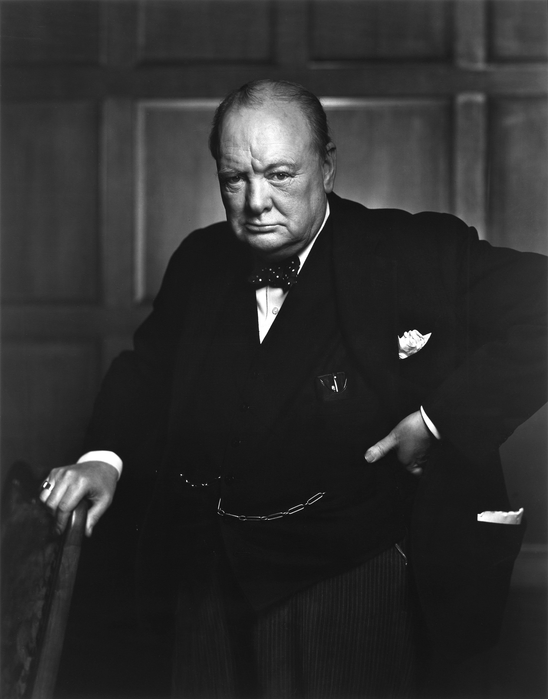

Sir Winston Churchill
The man who saved England during WWII

Winston Churchill was the Prime Minister of United Kingdom during the Worl War Two
Here is a time line of Churchill's life
- 1874 - Churchill was born in England. His father was a politician man
- 1899 - Churchill became a war reporter
- 1900 - Became deputy
- 1908 - Churchill married Clementine Hozier
- 1911 - First Lord of the Navy
- 1915 - Churchill went to the war in France
- 1917 - Become minister
- 1940 - (10th of may)-Become Prime Minister
- 1940 - Churchill said in a speech "we will never surrender"
- 1945 - Met Roosevelt and Staline in Yalta
- 1953 - Win the Nobel Price of litterature
- 1958 - De Gaulle gave La Croix de la Libération to Churchill
- 1965 - Churchill died in London
"If you are going through hell, keep going."
--Winston Churchill
If you have time, you should read more about Churchill on his Wikipedia entry